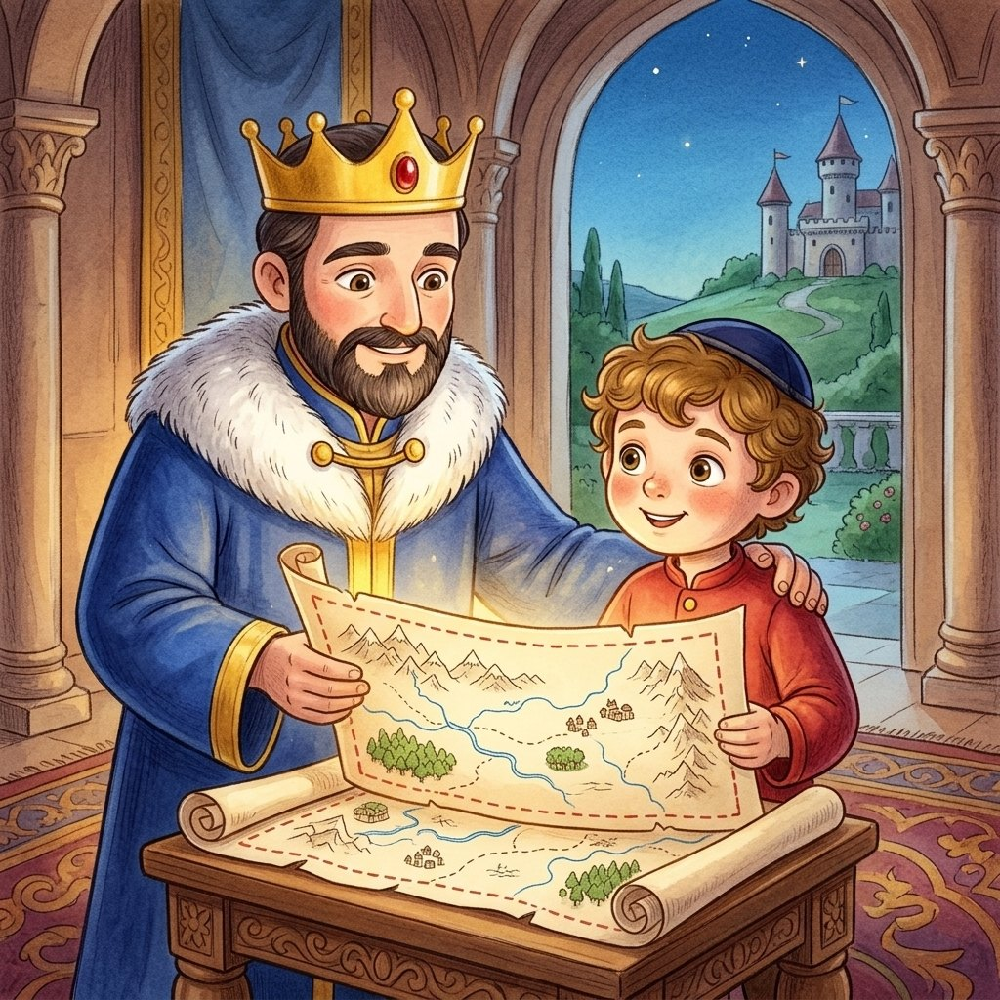

סיפור בהמשכים · 10 פרקים
המפה המופלאה
מלך טוב לב, ילד סקרן בשם פרדינן, ומפה אחת ענקית שנעלמת ברגע אחד. משל של רבי נחמן מברסלב, בעשרה פרקים.

מלך טוב לב, ילד סקרן בשם פרדינן, ומפה אחת ענקית שנעלמת ברגע אחד. משל של רבי נחמן מברסלב, בעשרה פרקים.
הפרקים נפתחים כאן אחד אחרי השני, לכל המשפחות ביחד.
וגם אם זה ייקח זמן: פרק חדש נפתח לפחות פעם בשבוע.
לוחצים על כפתור ההפעלה של פרק 1. בסוף כל פרק, הפרק הבא שכבר נפתח מתחיל לבד.